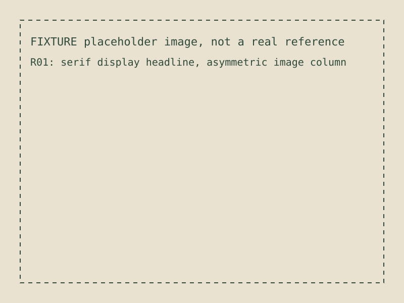
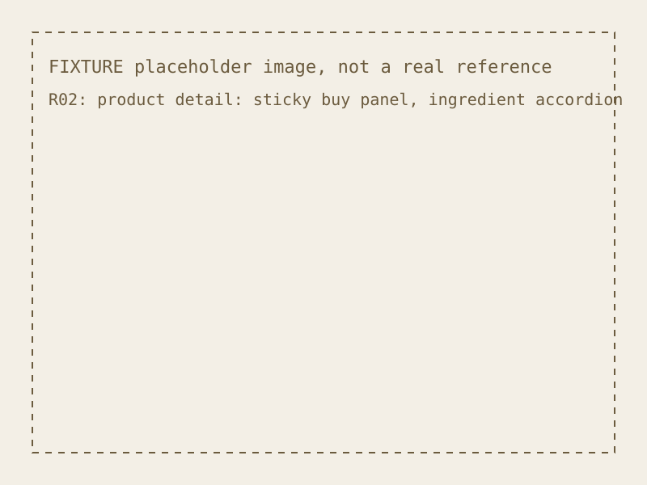
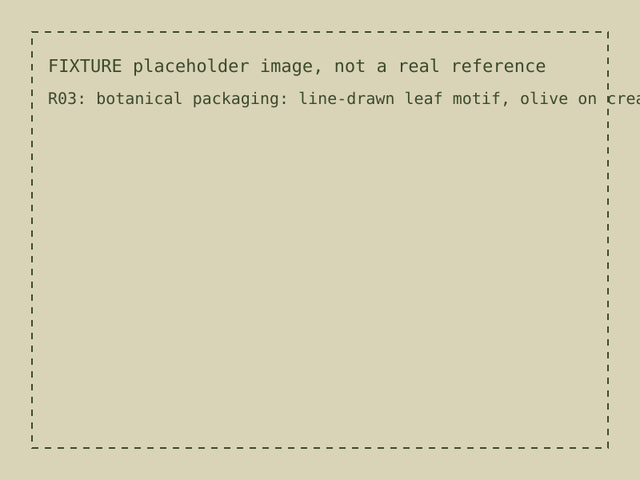
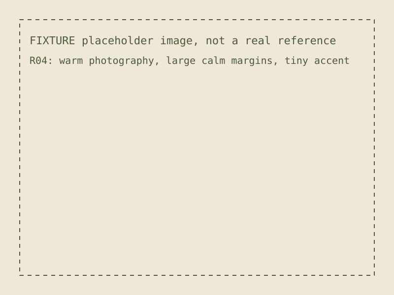
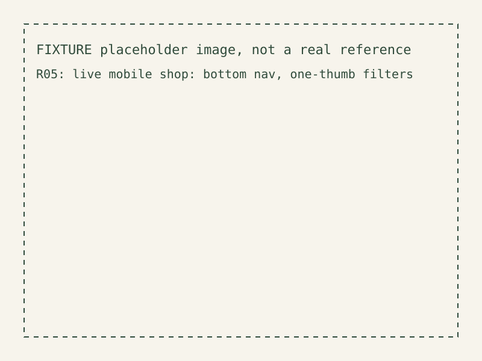
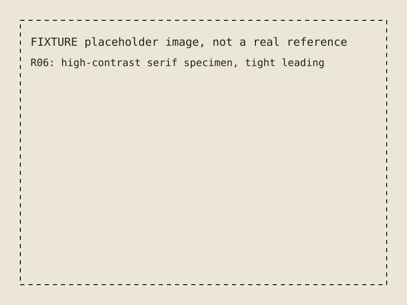
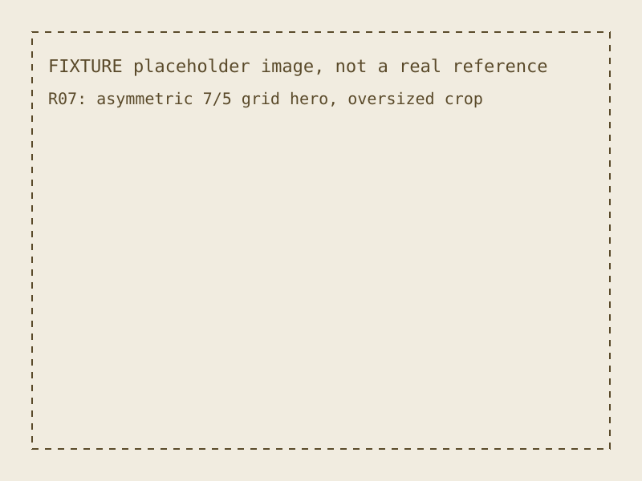

Not inspected
- R08 · collectui · partial · text_only · Text only; no design was seen
- R09 · pinterest · partial · search_snippet · Snippet only
- R10 · pinterest · blocked · inaccessible · Login wall. Recorded, not bypassed. Continued with original creator sites